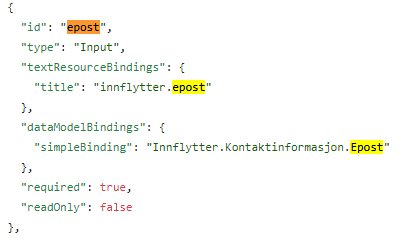

Løsningsforslag
Løsningsforslag og forklaring på forståelsessjekker
On this page:
Løsingsforslag - Applikasjonskode
Bolk 1 - Forståelsessjekk: Laste opp datamodell
Hvilken data er det tjenesteeier ønsker å samle inn her?
Datamodellen består av ett hovedelement: innflytter. Dette elementet består igjen av en del underobjekter som_Fornavn_, _Etternavn_, og _Mellomnavn_. I tillegg er det noen sammensatte elementer som _Adresse_,_Kontaktinformasjon_ og _Arbeidsinformasjon_.
Hvilken effekt har <minOccurs> i datamodellen? Du vil se at feltet har ulik verdi for Inflytter.Fornavn og Inflytter.Mellomnavn
minOccurs_ sier noe om hvor mange ganger objektet minst må ære nevnt.
minOccurs = 0 vil si at feltet ikke er påkrevd,
minOccurs=1 vil si at man forventer at det dukker oppminumum én gang i modellen.
Hvilke andre egenskaper er satt på feltet Innflytter.Mellomnavn?
nilable=true er definert på mellomnavn-feltet. Det vil si at det er tillatt med en nullverdi på mellomnavn.
Det er blitt generert en .C#, .metadata.json og .schema.json fil i tillegg til .xsd filen som du lastet opp. Hva er sammenhengen mellom disse filene?
De nevnte filene er alle generert ut ifra xsd-beskrivelsen av datamodellen. De beskriver alle dataen og datafeltenes egenskaper. Alle egenskaper er ikke overført i alle filene nødvendigvis, men summen av dem skal opprettholde det som er beskrevet i xsd-filen.
- C#-modellen benyttes av app backend til å deserialisere dataen og gjøre den tilgjengelig for prosessering og validering.
- .metadata.json benyttes i Altinn Studio for å enkelt kunne koble komponenter og dynamikk til datafeltene.
- .schema.json-filen benyttes av altinn-app-frontend for skjemavalidering på klientsiden.
Enkelte restriksjoner fra datamodellen overføres ikke til C#-filen, hvilke? Det er og lagt til nye egenskaper, hvilke?
minOccurs,maxOccurser ikke overført til modellen.nillableer kun overført på enkelte typer som f.eks decimal.XmlElement.Orderer innført som en dekorasjon på hver property.- Dette sørger for at rekkefølgen på elementene alltid vil bli den samme når dataen serialiseres til xml.
Bolk 1 - Forståelsessjekk: Sette opp komponenter
Finner du igjen komponenten som er koblet til e-post-feltet?
Det er flere måter å finne igjen et felt i FormLayout.json. Raskeste veien til mål er ofte å søke etter navnet på feltet som komponenten er koblet til. Dette finner du under dataModelBindigs.

Hvilken endring kreves i denne filen dersom e-post-feltet ikke lenger skal være påkrevd?
For å gjøre et felt valgfritt kan man endre “required=true” til “required=false”
Ved å endre én linje i FormLayout.json er det mulig å endre komponenten knyttet til mellomnavn til et input felt for et langt svar. Hvilken endring kreves?
Løsningen er å endre type-feltet fra Input til TextArea
som vist nedenfor.
{
"id": "mellomnavn",
"type": "TextArea",
"textResourceBindings": {
"title": "innflytter.mellomnavn"
},
"dataModelBindings": {
"simpleBinding": "Innflytter.Mellomnavn"
},
"required": true,
"readOnly": false
},
Bolk 1 - Forståelsessjekk: Redigere tekster
Hvordan får du inn engelsk språkstøtte i applikasjonen?
For alle nye repoer vil resources.nb.json autogenereresmappen config/texts. For å få støtte for engelsk i en applikasjon må file_resources.en.json_ opprettes. Merk at language popertyen øverst i filen må settes til **en**.
{
"language": "en",
"resources": []
}
Hvis vi en dag skal støtte Ukrainsk, hvilken språkkode vil du da måtte annotere filen med?
Ifølge listen over ISO 639-1 koder så er koden for ukrainsk uk.
Hvis en tekstnøkkel refert til i FormLayour.json ikke finnes i tekstressursene, hva vil vises da?
Hvis nevnte tekstnøkkel ikke finnes i tekstressursfilen vil tekstnøkkelen vises i stedet.
Bolk 2 - Forståelsessjekk: Legge til infoside
Hvilken fil i applikasjonsrepoet er det som må justeres på dersom du manuelt ønsker å endre siderekkefølgen på eksisterende sider?
I App/ui/Settings.json ligger siderekkefølgen beskrevet.
For å justere på siderekkefølgen må listen beskrevet under pages.order endres til å representere ønsket siderekkefølge.
Hvis du ønsker å gi en side et annet navn, men ikke har Altinn Studio tilgjengelig, hvilke filer må oppdateres med det nye filnavnet?
- Settings.json: endre navnet på siden under pages.order
- App/ui/layouts: endre filnavnet på siden som skal bytte navn
Hvordan oppnår du at teksten bryter dersom tekststrengen ikke er lang nok til å naturlig brytes?
Alle tekstressurser støtter markdown og dermed html-notasjon, så ved å benytte <br/> vil man kunne tvinge tekstbrytning.
Bolk 2 - Forståelsessjekk: Alternativ arbeidsflyt
Hvis en bruker går tilbake og endrer svaret sitt på infosiden, får den da opp datainnsamlingssidene? Hvis ikke. Hvilke endringer kan du gjøre for å støtte dette i din applikasjon?
I App/logic/App.cs finnes metoden GetPageOrder. Denne kalles fra frontend når man forlater en komponent som har konfigurert "triggers": ["calculatePageOrder"] i layout filen.
Se over løsningsforslaget for bolken for hvordan dette gjøres. Filer av interesse er App/ui/layouts/info.json og App/logic/App.cs.
Dersom man har sporvalg på et senere tidspunkt i en arbeidsflyt og en sluttbruker endrer et valg. Hva skjer med skjemdataen man tidligere har fylt ut, dersom siden skjules for sluttbrukeren?
Dersom du har denne typen logikk i en applikasjon der man kan fortsette til innsending for flere spor bør dataen på siden(e) som nå blir skjult for bruker nullstilles.
Bolk 2 - Forståelsessjekk: Preutfylling av personopplysninger
Er det mulig å endre en prefillverdi når den først er satt?
Ja, dersom man ikke gjør noen endringer vil en standardkomponent med prefilldata være redigerbar.
Hvordan kan man hindre at en prefillverdi endres av sluttbrukeren?
Komponenten kan settes til readonly. Alternativt kan man kjøre valideringer av dataen serverside for å verifisere at dataen i feltet matcher dataen fra prefillkilden. Dette kan gjøres i prosesserings eller valideringslogikken til applikasjonen.
Ikke alle norske innbyggere har et personnr, noen får tildelt et D-nummer. Hvordan må koden din justeres for å ta hensyn til dette dersom alder skal baseres på et f-nr eller d-nr som sluttbruker selv taster inn?
Et D-nummer er ellevesifret, som ordinære fødselsnummer, og består av en modifisert sekssifret fødselsdato og et femsifret personnummer. Fødselsdatoen modifiseres ved at det legges til 4 på det første sifferet: en person født 1. januar 1980 får dermed fødselsdato 410180, mens en som er født 31. januar 1980 får 710180.
Én måte å gå fra et vilkårlig f- eller d-nummer til en streng for fødselsdato på formatet dd-MM-yy er:
public static string GetDOB(string fOrDNumber){
List<string> firstCharsInDNumber = new(){"4", "5", "6", "7" };
var fOrDNumberArray = fOrDNumber.ToCharArray();
char[] dobArray = new char[6];
Array.Copy(fOrDNumberArray, dobArray, 6);
char firstChar = dobArray[0];
int firstInt = 0;
if(firstCharsInDNumber.Contains(firstChar.ToString()))
{
firstInt = firstChar - 4;
dobArray[0] = (char)firstInt;
}
string dobString = $"{dobArray[0]}{dobArray[1]}.{dobArray[2]}{dobArray[3]}.{dobArray[4]}{dobArray[5]}";
// verify that it is a valid date
DateTime.ParseExact(dobString, "dd.MM.yy", CultureInfo.InvariantCulture);
return dobString;
}
Bolk 3 - Forståelsessjekk: Deploye applikasjon
Er det mulig å ha to versjoner av en applikasjon i TT02 samtidig?
Nei, det er kun mulig å ha én versjon av applikasjonen ute i et miljø av gangen. Deployer man en annen versjon vil eksisterende versjon av applikasjonen overskrives.
Hva skjer hvis man deployer samme versjon av applikasjonen til miljøet en gang til?
Da vil alle operasjoner i forbindelse med deploy kjøres igjen. Man lagrer ressurstekster og annen metadata i Altinn Platform, og deploy pipeline for å rulle ut applikasjonen i clusteret vil og kjøre.
Det vil dog ikke bli spunnet opp nye poder i forbindelse med dette da det ikke er noen reelle endringer på tjenesten som kjører i miljøet.
Vil applikasjonen være tilgjengelig umiddelbart etter deploy?
Ja, tjenesten vil være tilgjengelig umiddelbart etter deploy. Dersom status er grønn i Altinn Studio skal du kunne nå applikasjonen.
Er det mulig å fjerne en applikasjon fra miljøet hvis den først er blitt deployet?
Per mars 2022 er det ikke mulig for en tjenesteeier å selv fjerne en applikasjon fra et miljø når den først er deployet. Da må man kontakte support. Det vil i løpet av året bli tilgjengeliggjort funksjonalitet for at tjenesteeier selv kan gjøre denne operasjonen.
Bolk 4 - Forståelsesssjekk: Innsamling av arbeidsopplysninger
Hva er forskjellen på statiske og dynamiske options?
Statiske options er definert build time, og vil, som navnet tilsier, være statiske under hele sin levetid. Dynamiske options hentes ut runtime og kan dermed hente verdi basert på tiden på døgnet eller andre dynamiske verdier.
Hva vil være et bruksområde for sikrede dynamiske options?
Options er by default åpent tilgjengelige og API’et vil være mulig å nå for personer som ikke er logget inn i appen. Det er heller ingen restriksjoner på roller eller annet.
For enkelte caser så kan det tenkes at man ønsker å eksponere options som er sensitive. Her kommer sikrede dynamiske options til sin rett hvor man får automatisk verifisering at den som gjør kallet har Instance.Read rettigheter.
Bolk 4 - Forståelsesssjekk: Differensiert datagrunnlag for offentlig og privat sektor
Om en option-liste er satt opp med en mapping mot datamodellen - hva skjer når det aktuell feltet endrer verdi?
Om et felt i mappingen oppdateres så vil app-frontend gjøre et nytt kall for å hente ut options-listen. Dette muliggjør å dynamisk vise valg som er skreddersydd til brukerens tidligere utfylte data.
Hva skjer med valgt verdi på et felt som er koblet til en option-liste som hentes på nytt fra server siden?
Om brukeren f.eks har valgt kommune fra en nedtrekksliste over kommuner som er satt opp med en mapping på Fylke, går tilbake og endrer feltet Fylke så vil det valgte svaret i kommune-listen bli fjernet.
Bolk 4 - Forståelsessjekk: Skreddersydd tilbud for IT-kompetanse
Om du legger til en ny funksjon i RuleHandlerHelper - hvor kjøres disse funksjonene? Vil dynamikk fungere uten denne definert?
Funksjoner definert i RuleHandlerHelper.js kjøres som støttefunksjoner når man kobler opp dynamikken i Altinn Studio.
Dynamikk kan settes opp uten disse definert og vil fortsatt fungere om man har satt opp funksjonene i RuleHanlderObject.js og definisjonene ligger i RuleConfiguration.json.
Om du legger til en ny funksjon i RuleHandlerObject - hvor kjøres disse funksjonene? Vil dynamikk fungere uten denne definert?
Funksjoner definert i RuleHandlerObject.js er faktisk dynamikk som lastes av app-frontend runtime og kjøres som en del av applikasjonsflyten som treffer sluttbruker.
Dynamikk vil ikke fungere uten denne definert.
Hva er sammenhengen mellom funksjoner definert i RuleHandlerObject og filen RuleConfiguration.json?
RuleConfiguration.json er en konfigurasjon som forteller noe om hvilke felter den aktuelle regelen i RuleHandlerObject skal treffe og eventuell effekt funksjonen skal ha.
En funksjon definert i RuleHandlerObject kan settes opp flere ganger i RuleConfiguration.json. Man kan nesten tenke på det som “instanser” av funksjonen.
Bolk 5 - Forståelsessjekk: Utvide prosess med et bekreftelsessteg
Hvilke Altinn-spesifikke egenskaper er satt på hver prosesstask?
altinn:tasktype er definert for hver task.
Hvilke begrensninger vil en ekstern BPMN editor ha når man skal redigere prosessbeskrivelsen til en Altinn App?
Altinn-spesifikke egenskaper vil trolig ikke bli importert eller eksportert når man jobber med modellen.
Vil prosessflyten kunne gå begge veier? Fra utfylling til bekreftelse og fra bekreftelse til utfylling?
SequenceFlow i bpmn-filen beskriver kun at flyten går én fei, fra utfylling og til bekreftelse. Flyten vil dermed ikke kunne gå begge veier.
Bolk 5 - Forståelsessjekk: Legge til autorisasjonsregler for bekreftelsessteget
Hva vil skje når prosessflyten går videre til bekreftelse-steget uten at autoriasjonsreglene er blitt oppdatert?
Applikasjonen vil vise “Ukjent feil” når brukeren trykker på send inn knappen.
Hva skjer dersom du ikke spesifiserer hvilke roller som har lov til å utføre en aksjon i en autorisasjonsregel?
Da vil alle brukere, både med og uten roller, har tilattelse til å utføre confirm operasjonen for applikasjonen.
Bolk 5 - Forståelsessjekk: Validering av innsender
Hvilken endring ville du foreslått for kunden for å kunne oppfylle dette kravet uten å legge inn egendefinerte valideringen på dette steget?
Ved å heller endere policy til at kun rollen PRIV. som kun delegeres til en privatperson på vegne av en selv, har tilattelse til aksjonen confirm vil autorisasjonsreglene gjøre sjekken som nå er lagt inn som egen validering automatisk.
Bolk 6 - Forståelsessjekk: Repeterende grupper
Hvilket felt i datamodellen er det som bestemmer om et element er repeterende?
Feltet maxOccurs i xsd-modellen sier noe om et felt er repeterende. Om maxOccurs > 1 vil man i praksis se på dette elementet som en liste.
Hvor mange repetisjoner er tillatt for feltet TidligereBosteder?
Det er tillatt 10 repetisjoner for TidligereBosteder.
Bolk 6 - Forståelsessjekk: Validering
Når kjøres valideringer serverside?
Valideringer på serversiden kjøres som standard kun i det brukeren velger å bevege seg videre fra et steg. Denne oppførselen kan overstyres, og det er mulig å trigge valideringer både på enkelte felter og f.eks ved sidebytte mellom ulike sider.
Hvorfor burde valideringer som legges til på klientsiden også dupliseres serverside?
Klientside-valideringer bør anses som et hjelpemiddel for bedre bruksopplevelse og ikke som en garanti på at data leveres på riktig format. Ondsinnede kan komme seg forbi disse valideringene, og klientside-valideringer vil ikke bli kjørt om man f.eks benytter seg av api’ene direkte. Derfor bør valideringer som legges på frontend alltid gjenspeiles i logikken backend.
Bolk 6 - Forståelsessjekk: Dataprosessering
Når blir Data processing kjørt?
Data processing blir kjørt hver gang brukeren enten leser eller skriver data. Det vil si at hver gang brukeren endrer et gitt felt så vil logikken kjøres. Dette stller derfor krav til apputvikler at optimaliserer koden som kjøres og unngår tunge og komplekse operasjoner på hver kalkulering.
Hva skiller ProcessDataWrite og ProcessDataRead?
ProcessDataWrite kjøres i det brukeren skriver data, altså når brukeren har fylt inn et felt eller oppdaterer en eksisterende verdi.
ProcessDataRead kjøres i det brukeren leser data fra databasen, f.eks når man navigerer seg til en tidligere instans av applikasjonen og henter opp tildigere utfylt data.
Hva er forskjellen på DataProcessing og Calculations?
Kjært barn har mange navn - også i dette tilfellet. DataProcessing og calculations er samme navn på samme konsept. I nugetpakkene før 4.7.0 gikk dette under navnet calculations eller kalkuleringer, mens dette nå omtales som DataProcessing.